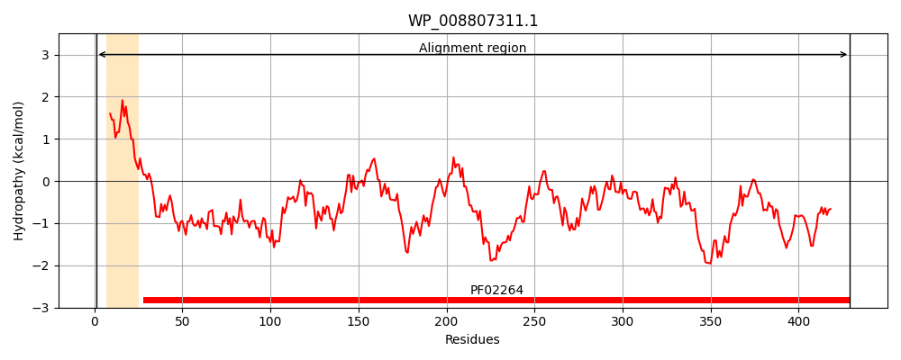
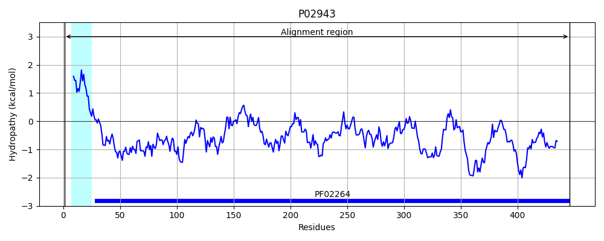
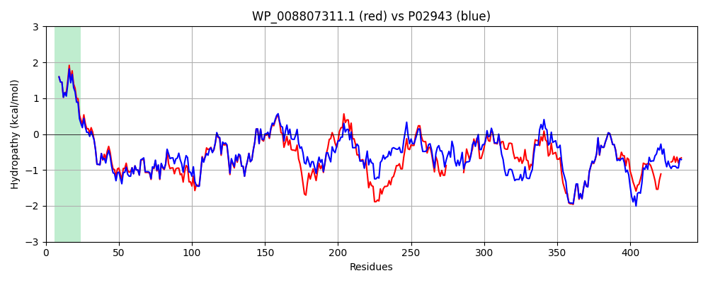

Hit Accession: P02943
Hit TCID: 1.B.3.1.1
Hit Description: gnl|BL_ORD_ID|8239 gnl|TC-DB|P02943|1.B.3.1.1 MALTOPORIN PRECURSOR (MALTOSE-INDUCIBLE PORIN) (LAMBDA RECEPTOR PROTEIN) - Escherichia coli.
Mach Len: 446
e:0.000000
Query TMS Count : 1
Hit TMS Count: 1
TMS-Overlap Score: 0.950000
Predicted Substrates:CHEBI:23489;alpha-cyclodextrin, CHEBI:62009;maltoheptaose heptasaccharide, CHEBI:6668;maltose, CHEBI:17306;maltose, CHEBI:6672;alpha-maltotriose, CHEBI:6671;maltotetraose, CHEBI:61996;maltopentaose pentasaccharide, CHEBI:22582;antimicrobial agent
BLAST Alignment:
Score: 1797 , Bit scores: 696 bits, E-value: 0.0e+00, Alignment length: 446, Percentage identity: 73
Query: 1 MMITLRKLPLAVAVAAGVMSAQALAVDFHGYARSGIGWTGSGGEQQCFKATGAQSKYRLGNECETYAELKLGQELWKEGDKSFYFDTNVAYSVNQEDDWESTSPAFREANIQGKNLIDWLPGSTLWAGKRFYQRHDVHMIDFYYWDISGPGAGLENVDLGFGKLSLAATRNSESGGSYTFSSDDTKKYAAKTANDVFDIRLAGLETNPGGVLELGVDYGRANPQDDYRLEDGASKDGWMWTGEHTQSIWGGFNKFVVQYATDAMTSWNSGHSQGT-----------SIDNNGSMIRVLDHGAMDFNDDWGLMYVAMYQDVDLDSKNGSTWYTVGVRPMYKWTPIMSTQLEIGYDNVKSQRTSENNNQYKITLAQQWQAGNSVWSRPAIRIFATYAKWDENWGYSNASGLQTKDSSGSGMYTS------SRGDDSEVTFGAQMEVWW 429
MMITLRKLPLAVAVAAGVMSAQA+AVDFHGYARSGIGWTGSGGEQQCF+ TGAQSKYRLGNECETYAELKLGQE+WKEGDKSFYFDTNVAYSV Q++DWE+T PAFREAN+QGKNLI+WLPGST+WAGKRFYQRHDVHMIDFYYWDISGPGAGLEN+D+GFGKLSLAATR+SE+GGS +F+S++ Y +TANDVFD+RLA +E NPGG LELGVDYGRAN +D+YRL DGASKDGW++T EHTQS+ GFNKFVVQYATD+MTS G SQG+ +I+NNG M+R+LDHGA+ D+W +MYV MYQD++ D+ NG+ W+TVG+RPMYKWTPIMST +EIGYDNV+SQRT + NNQYKITLAQQWQAG+S+WSRPAIR+FATYAKWDE WGY + G + RGD E TFGAQME+WW
Sbjct: 1 MMITLRKLPLAVAVAAGVMSAQAMAVDFHGYARSGIGWTGSGGEQQCFQTTGAQSKYRLGNECETYAELKLGQEVWKEGDKSFYFDTNVAYSVAQQNDWEATDPAFREANVQGKNLIEWLPGSTIWAGKRFYQRHDVHMIDFYYWDISGPGAGLENIDVGFGKLSLAATRSSEAGGSSSFASNNIYDYTNETANDVFDVRLAQMEINPGGTLELGVDYGRANLRDNYRLVDGASKDGWLFTAEHTQSVLKGFNKFVVQYATDSMTSQGKGLSQGSGVAFDNEKFAYNINNNGHMLRILDHGAISMGDNWDMMYVGMYQDINWDNDNGTKWWTVGIRPMYKWTPIMSTVMEIGYDNVESQRTGDKNNQYKITLAQQWQAGDSIWSRPAIRVFATYAKWDEKWGYDYTGNADNNANFGKAVPADFNGGSFGRGDSDEWTFGAQMEIWW 446 | Protein Hydropathy Plots: |
|---|
|  |  |
Pairwise Alignment-Hydropathy Plot:
|
|---|
|  |